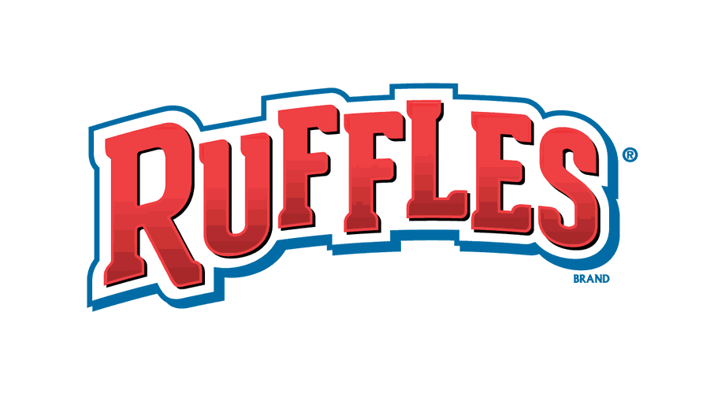
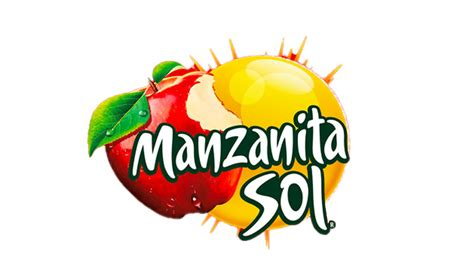
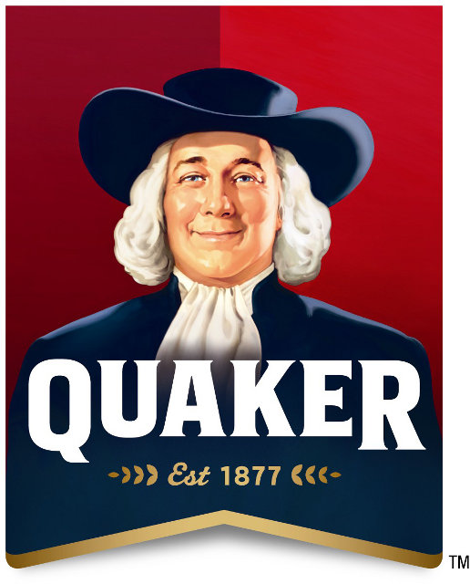
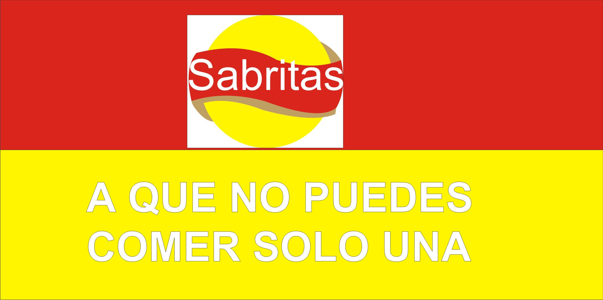

Grupo PepsiCo
|
Grupo Games es una compañía mexicana fabricante de galletas fundada en 1921, con sede en la ciudad de San Nicolás de los Garza, Nuevo León, México. |
|
Gatorade es una bebida isotónica usada para rehidratar y recuperar carbohidratos (bajo la forma de azúcares sacarosa y glucosa) y electrolitos (sales del sodio y potasio) agotados durante el ejercicio. |
|  | Ruffles es el nombre de una marca de patatas fritas inglesas onduladas, producidas originalmente por la marca Frito-Lay, una propiedad de PepsiCo. |
|  | La Manzanita Sol es una marca de bebidas sabor manzana de la compañía PepsiCo que predomina en México. |
|  | Quaker México ofrece una variedad de productos ricos y nutritivos con avena, como cereales, barras, galletas y super foods. |
